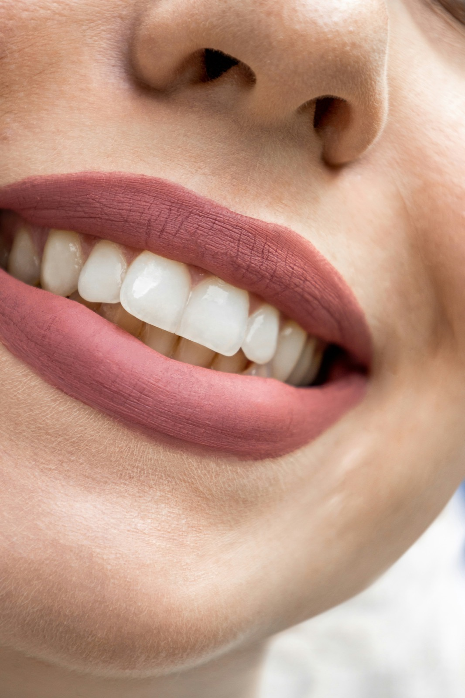
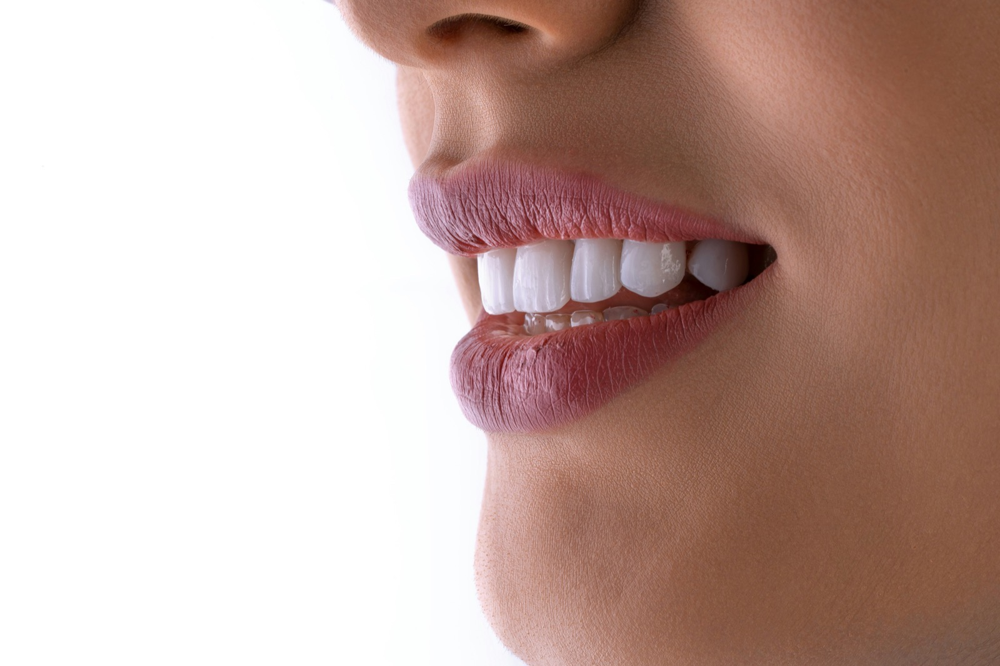

We opened EliteDent for the patients who leave other chairs feeling rushed.
This is not a brochure version of us. It is how we actually work: slower than a production line, clearer than a sales pitch, and careful with the teeth you already have.

Most people who find us are not chasing a “Hollywood” look. They are tired of appointments that end with a quote and little explanation. They want someone to sit with the photo, the scan, and the worry. then say what is necessary, what can wait, and what we would do for our own family.
EliteDent started as a small studio with that filter. We keep consultations unhurried on purpose. If you need time to think, we write the plan down and send you home with it. No pressure to decide in the chair while the light is still in your eyes.
What a first visit usually feels like
You talk first. We ask what bothers you day to day: a chip you catch with your tongue, a shade that photographs colder than you feel, a gap that has widened over years. Then we look together: mirrors, photos, and imaging on screen so you are not guessing what we see.
Only after that do we talk options. Sometimes the kindest answer is a clean, a night guard, or waiting. Sometimes it is whitening, aligners, a veneer, or an implant. We will tell you which path is gentle, which is durable, and which we would skip if it were our mouth.

How we decide what to treat
Conservatism is not a slogan for us. It is the default. Healthy structure stays. We use tooth-colored restorations, aligners, or implants when they earn their place: strength, comfort, or a result that still looks like you.
Every plan is written in plain language. If a term is unavoidable, we translate it. You should leave knowing the next step, the timing, and the trade-offs, not a stack of product names.
Who we are here for
People who want calm dentistry. Parents scheduling around school. Adults who delayed care and feel nervous walking back in. Anyone who would rather understand the scan than nod through it.
If that sounds like you, come in for a conversation. Bring old x-rays, a photo of a smile you like, or simply the question you have been carrying. We will answer it without rushing you toward a treatment you did not ask for.